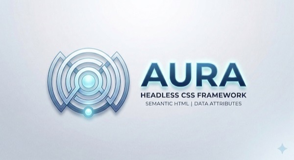

Headless by default
Structure without opinion. Readable typography, sensible spacing, and semantic surfaces that do not force a visual language.


A headless CSS framework built on semantic HTML and
data-* attributes. No classes, no mandatory build
step, no JavaScript required for the base layer.
Structure without opinion. Readable typography, sensible spacing, and semantic surfaces that do not force a visual language.
No class names to memorize. Use
data-layout, data-surface,
data-variant and other semantic attributes.
Elements for base styles. Composites for CSS-only patterns. Components for optional interactive custom elements.
Layer a brand pack on top for a full design system. Switch brands at runtime with a single attribute change.
Add the base stylesheet and optionally layer composites, components, and a brand pack.
<!-- Required: base elements -->
<link rel="stylesheet" href="aura.css">
<!-- Optional: composites for higher-level CSS patterns -->
<link rel="stylesheet" href="aura-composites.css">
<!-- Optional: interactive custom elements -->
<script type="module" src="@aura/components/browser.js"></script>
<script type="module" src="@aura/diagram/browser.js"></script>
<!-- Optional: brand pack -->
<link rel="stylesheet" href="aura-brand.css">
<body data-brand="aura">CSS layers ensure predictable specificity regardless of load order.
reset > tokens > brands > defaults
> layouts > components > utilities > printOKLCH-based color system with fluid typography and consistent spacing scale.
--space-1 through --space-16
--text-xs through --text-3xl
--primary, --secondary, --accentThe base layer provides typography, surfaces, buttons, notices, forms, and utilities without requiring any classes.
Body text inherits system fonts and scales fluidly using
clamp() functions. Inline elements like
strong, emphasis,
code, and links are styled
automatically.
Blockquotes get a subtle left border and muted styling from the base layer.
<h1>Heading 1</h1>
<p>Body text with <strong>strong</strong> and <code>code</code>.</p>
<blockquote><p>A quotation.</p></blockquote><button type="button">Default</button>
<button type="button" data-variant="solid">Solid</button>
<button type="button" data-variant="soft">Soft</button>
<button type="button" data-variant="ghost">Ghost</button>
<button type="button" aria-busy="true">Loading</button><aside data-surface="notice" data-status="info">
<strong>Info</strong>
<p>Neutral informational message.</p>
</aside>A headless CSS framework that provides structure through semantic HTML and data attributes, not class names.
The base Elements and Composites layers are pure CSS. The Components layer adds optional interactive custom elements.
Override design tokens in a brand pack CSS file and apply
it with data-brand on the body element.
<section data-ui="accordion">
<details name="faq" open>
<summary>Question</summary>
<p>Answer.</p>
</details>
</section><dialog id="my-dialog">
<h3>Title</h3>
<p>Content.</p>
<button onclick="this.closest('dialog').close()">Close</button>
</dialog>Directional layouts, responsive grids, alignment, gaps, and stacking - all through data attributes.
<div data-layout="row" data-align="center" data-justify="between">...</div>
<div data-layout="cluster" data-gap="2">...</div>
<div data-layout="stack" data-gap="2">...</div>Columns size themselves using auto-fit.
Set a minimum with data-grid-min.
The grid adapts to available space automatically.
Gaps use the design token spacing scale.
<div data-layout="grid" data-gap="3" data-grid-min="sm">
<div data-surface="card">...</div>
<div data-surface="card">...</div>
</div>Stacks vertically on mobile.
Use data-stack="mobile" for this behavior.
<body data-layout="container">...</body>
<div data-layout="row" data-stack="mobile">...</div>Text fields, selects, checkboxes, switches, ranges, progress bars, and validation - all styled through the base layer.
<label for="name">Name</label>
<input id="name" type="text" required />
<label><input type="checkbox" role="switch" /> Toggle</label>
<progress value="72" max="100">72%</progress>Optional light-DOM custom elements that add keyboard navigation, selection state, and panel coordination. No shadow DOM - your authored HTML stays visible and styleable.
<script type="module" src="@aura/components/browser.js"></script>
<script type="module" src="@aura/diagram/browser.js"></script>
aura-tabs coordinates tab selection with roving
focus and panel visibility. The component only manages behavior -
the Composites layer handles visual treatment.
Selected:
overview
Tabs switch content inline with Left/Right arrow key navigation, Home, End, and click activation.
Visual treatment comes from CSS tokens in the Composites layer. The component only manages selection and panel visibility.
Roving focus with tabindex,
aria-selected, and proper tab semantics
are handled automatically.
<aura-tabs data-ui="tabs" value="overview">
<nav data-part="tablist">
<button data-part="trigger" data-value="overview">Overview</button>
<button data-part="trigger" data-value="tokens">Tokens</button>
</nav>
<section data-part="panels">
<article data-part="panel" data-value="overview">...</article>
<article data-part="panel" data-value="tokens" hidden>...</article>
</section>
</aura-tabs>
aura-master-detail coordinates a sidebar list with a
detail panel. The Composites layer provides a responsive grid
shell.
Selected:
elements
The foundation layer provides reset, design tokens, element defaults, layout primitives, and utilities in a single CSS file.
Higher-level CSS patterns like master-detail shells, tab bars, tree views, and diagram canvases. No JavaScript required.
Light-DOM custom elements that add keyboard navigation, focus management, and selection state.
<aura-master-detail data-ui="master-detail" value="elements">
<nav data-part="master">
<button data-part="trigger" data-value="elements">
<strong>Elements</strong>
<p>Base styles and tokens</p>
</button>
</nav>
<section data-part="detail">
<article data-part="panel" data-value="elements">...</article>
</section>
</aura-master-detail>
aura-combobox adds filtering, active option state,
keyboard selection, and optional linked panels to a native input
and list.
Selected:
tabs
No matches found.
<aura-combobox data-ui="combobox" value="tabs">
<label for="search">Search</label>
<div data-part="control">
<input data-part="input" type="text" placeholder="Filter..." />
<button data-part="toggle" aria-label="Toggle"></button>
<input type="hidden" data-part="value" name="search" />
</div>
<ul data-part="listbox">
<li data-part="option" data-value="tabs">Tabs</li>
</ul>
<p data-part="empty" hidden>No matches.</p>
</aura-combobox>
aura-splitter adds keyboard resizing, pointer drag,
and percent-based layout state to a two-pane layout.
Split at:
40%
Drag the separator or use arrow keys to resize.
The split value is exposed through the
value attribute and the
aura-change event.
<aura-splitter data-ui="splitter" value="40" min="25" max="75" step="5">
<section data-part="pane" data-pane="primary">...</section>
<button data-part="separator" aria-label="Resize"></button>
<section data-part="pane" data-pane="secondary">...</section>
</aura-splitter>
aura-tree adds hierarchical selection, branch
expansion, and spatial keyboard navigation to a nested list.
Selected:
aura-css
<aura-tree data-ui="tree" value="root">
<ul data-part="tree">
<li data-part="item" data-branch data-expanded>
<button data-part="toggle"></button>
<button data-part="node" data-value="parent">Parent</button>
<ul data-part="group">
<li data-part="item">
<button data-part="node" data-value="child">Child</button>
</li>
</ul>
</li>
</ul>
</aura-tree>
aura-diagram turns semantic content with CSS Grid
placement into interactive flow diagrams with spatial keyboard
navigation and linked detail panels.
Selected:
input
A simple three-step data pipeline.
Raw data arrives from external sources via API or file upload.
Data is cleaned, validated, and normalized into the target schema.
Transformed data is persisted to the database and indexed for queries.
<aura-diagram value="input" style="--diagram-columns: 7">
<div data-part="canvas">
<button data-part="node" data-kind="input" data-value="input"
style="--diagram-column: 1 / span 2; --diagram-row: 1">
<strong>Ingest</strong>
</button>
<div data-part="connector" aria-hidden="true"
style="--diagram-column: 3; --diagram-row: 1">
<svg viewBox="0 0 120 40"><path d="M4 20 H108" /></svg>
</div>
<!-- more nodes... -->
</div>
<section data-part="panels">
<article data-part="panel" data-value="input">...</article>
</section>
</aura-diagram>Switch between brands, toggle dark mode, and adjust contrast and motion preferences - all through data attributes on the root elements.
A brand pack is a standalone CSS file that overrides tokens via
@layer brands. Apply it by setting
data-brand on the body.
<body data-brand="aura">
<body data-brand="editorial">
<body> <!-- headless, no brand -->Toggle dark mode, high contrast, and reduced motion through attributes on the root element.
<html data-theme="dark">
<html data-contrast="more">
<html data-motion="reduce">OKLCH-based colors adapt automatically between light and dark modes.
Aura bakes accessibility into every layer rather than treating it as an afterthought.
:focus-visible outlines on all interactive
elements. Components use roving focus for keyboard navigation.
prefers-reduced-motion is respected by default.
Override with data-motion="reduce".
prefers-contrast: more/less and
forced-colors: active (Windows High Contrast)
are supported.
Components manage aria-selected,
aria-expanded, and aria-current
automatically.
All components share a consistent host contract for attributes, methods, and events.
| API | Type | Description |
|---|---|---|
| value | Attribute | Current selection value. Reflected as a host attribute. |
| activation | Attribute |
"auto" (default) or "manual".
Controls whether focus movement triggers selection.
|
| show(value) | Method | Programmatically select a value and show its panel. |
| focusCurrent() | Method | Move focus to the currently active trigger or node. |
| aura-change | Event |
Dispatched on selection change.
detail: { value, trigger, panel }.
|